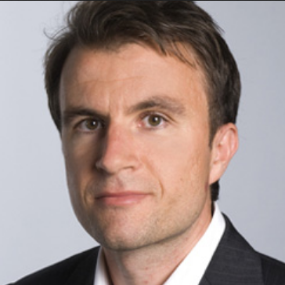
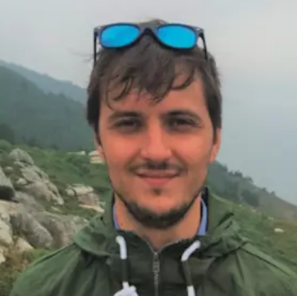

Agriculture and geophysics:
Illuminating the subsurface!
Agrogeophysics is an emerging research field. What are the current, potential and, future applications research needs? Come and discover with us!
ETH Zürich, Switzerland* 1st and 2nd February 2024
*The event will also be streamed online (written questions only)
Want to join? Register now and submit an abstract!
Deadlines:
- 15th December 2023 (abstract submission)
- 12th January 2024 (registration)
About this event
After the success of the first edition ‘Geophysics & Agriculture: the perfect match?’ in 2020 and the second edition ‘Agriculture and geophysics: an electrical meeting!’ in 2022, we are pleased to give you all a new opportunity to exchange knowledge, good practices, and passion on current trending topics in agrogeophysics!
Agrogeophysics harnesses geophysical methods such as ground-penetrating radar, electrical imaging, seismic,… from hand-held over drone to satellite-borne, to characterize patterns or processes in the soil-plant continuum of interest for agronomic management. These methods help develop sustainable agricultural practices by providing minimally-invasive, spatially consistent, multi-scale, and temporally-resolved information of processes in agro- ecosystems that is inaccessible by traditional monitoring techniques. The aim of this session is to feature applications of geophysical methods in agricultural research and/or show methodologies to overcome their inherent limitations and challenges. We welcome contributions monitoring soil or plant properties and states revealing information relevant for agricultural management; studies developing and using proximal or remote sensing techniques for mapping or monitoring soil-water-plant interactions; work focused on bridging the scale gap between these multiple techniques; or work investigating pedophysical relationships to better understand laboratory-scale links between sensed properties and soil properties and states of interest. Submissions dedicated to data fusion, utilizing innovative modeling tools for interpretation, and demonstrating novel acquisition or processing techniques are encouraged.
Invited talks
Anja Klotzsche | FZ Jülich, Germany
“Critical analysis of GPR in the context of Agro-Geophysics”
Kaijun Wu | UCLouvain, Belgium
“Drone-borne Ground Penetrating Radar for digital soil mapping”
Niklas Linde | UNIL, Switzerland
“Advances in Bayesian inversion methodologies with high potential value in agrogeophysics”
Adrian Flores-Orozco | TU Wien, Austria
“Delineation of organic carbon pools in subsoils through electrical methods”
Benjamin Mary | ICA-CSIC, Spain
“Monitoring and modelling root-zone processes with geoelectrical methods”

Myriam Schmutz | Bordeaux INP, France
“Overview of geoelectrical advances for vineyard study”
Practical information and registration
- Registration
- deadline: 12th January 2024
- fees: free for master students, 40 CHF for PhDs, 60 CHF for all other cases.
-
Arrival + conference dinner: Wednesday January 31st, 2024 - Social dinner in the evening (18:00)
-
Seminar days:
- Thursday February 1st, 2024 - Main scientific program (8:30 - 18:00)
- Friday February 2nd, 2024 - Workshop (8:30 - 18:00)
-
After conference:
- Saturday February 3rd, 2024 - Ski trip (for those who want, not included in the fee)
Location: ETHZ Zentrum Campus Zürich, Switzerland
How to get there
The conference will take place in the Alumni Pavillon (MM C 78.1) which is located at 12 minutes walk from Zürich main train station (Zürich HB).
Accommodations
Here are three suggested hotels close to the venue:
- Hotel Limmathof - Hotel Limmathof (10 minutes walk to the venue, promo code: agrogeo24)
- Hotel Felix | Zurich – centrally located in the heart of Zurich’s old town (8 minutes walk to the venue)
- ibis Styles Zurich City Center | ALL - ALL (accor.com) (12 minutes walk to the venue)
- KRONE Zurich | Pop Up Hotel | Pop Up Hotel Krone Zurich (9 minutes walk to the venue, promo code: AGROGEO24)
Contact
Interested in participating? Get in touch! Pick the option that works best for you.
- Email abstracts.agrogeophy@gmail.com or another committee member directly.
- Find us on the Agrogeophy Slack (if it is the first time use this invitation link).
Previous seminars
- 2020 in Gembloux (Belgium) Geophysics conquering new territories: The rise of “agrogeophysics”
- 2022 in Brussels (Belgium) Agriculture and Geophysics: An Electrical Meeting!
Collaborations
We’re always interested in new collaborations and interesting projects. We’d love to hear from you if your project or idea could benefit from our expertise in monitoring, data analysis, inverse problems, and research software engineering.
Reach out to our team to start a conversation!
Sponsors
This event is supported by: